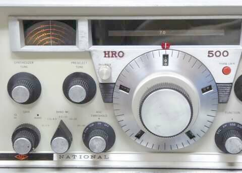
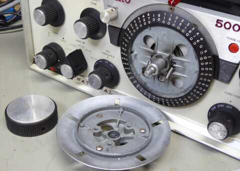
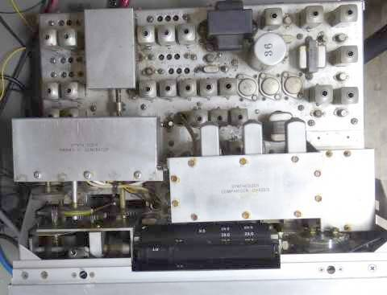
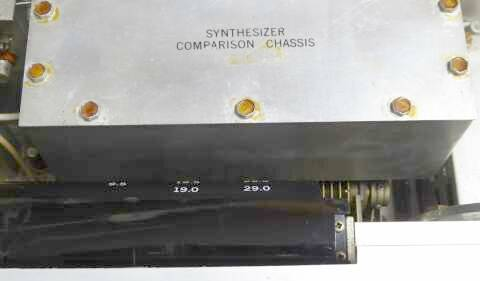
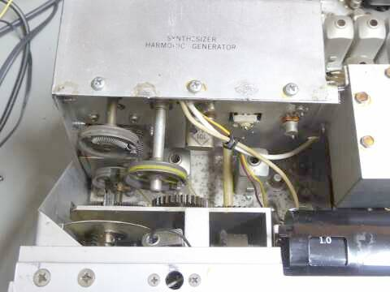
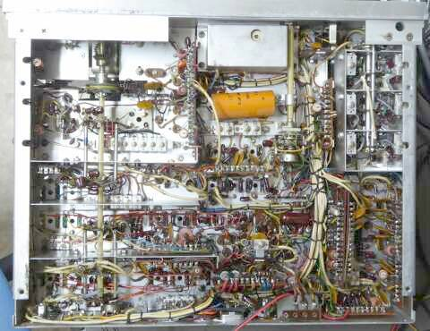
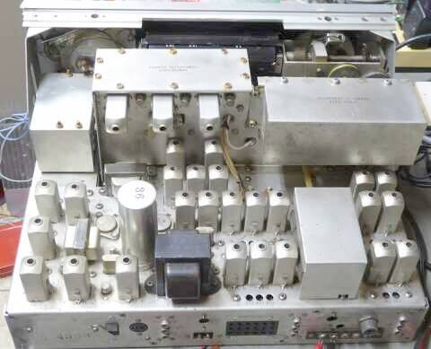
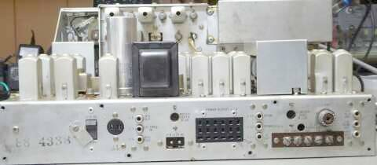

 |
ＨＲＯが一目で分かる特徴的なダイヤル
ＰＷダイヤルと呼ばれています
そして本機の特徴、Ｐｈａｓｅ-Ｌｏｃｋを使ったＨＦＯの出力調整と連動したバンド表示
バンド表示は、縦方向に回転して表示します
動作には関係しませんが、プリ･セレクタ周波数表示板の一部が照明ランプに焼かれて黒ずんでいます
長い時間同じところを受信していたのでしょう
周波数表示板そのものも、熱で少し変形しています
写真は、７１００ＫＨｚ ＳＳＢを受信中です |
 |
ＰＷダイヤル
分解中の一場面
アルミ・ダイキャストの採用で重厚です
メイン･ノブも重量があります
パネル刻印「５００」の下に見える赤いボタン状のものは、Ｐｈｅｓｅ-Ｌｏｃｋが外れた時に点灯するランプです |
 |
シャーシ上部写真
シールドケース２つの中身は、シンセサイザ関連です
シャーシが、鉄製と言うことで、どうしても劣化が目に付きます
レイアウトは、真空管式に近く、信号の流れが一目で分かる構成です
ＲＦトランスや、Ｔｒ番号が刻印されています |
 |
ＶＦＯにおいては、リニアリティ調整用に外側にステーターが用意された独特のものが使用されています
見にくいですが、横向きＶＣの右端・・・ＶＣフレームの外側にリニアリティ調整用ローターが用意されています
ＮＣＸ-５のＶＦＯにも同様のローターが用意されています
|
 |
トラッキングは全てバリコン連動です
バンド切替を含め、糸掛け／ギヤと、その駆動方法も色々メカの組み合わせです
シールドを止めているビスは、オリジナルではありません
本来、右に写っている、頭が六角のビスのはずです
|
 |
シャーシ底面
ご覧のように、配線は全て手組みで行われています
プリント基板の使用はありません
|
 |
リアから
真空管式のものを見ている感じがしますが、オール･ソリッド･ステートです
ソケットには、真空管に代わり？ＴＲが刺さっています！
バンド表示は、バンド切替によって、違った表示位置を表に見せるような構造です
すなわち表示される場所が、バンドＳＷの位置毎に変わります
黒のドラム状のものが、バンドを表示する部分の内幕です
リアパネル（下段）
オシレータの出力は全て出してあります（ＲＣＡ-Ｒ）
角型多極コンセントには、本機をリモコンで操作できる各種端子が用意されています
ＡＣ１１５／２３０Ｖ、ＤＣ１２Ｖの切替ＳＷや、ＶＬＦアンテナ接続端子（ＲＣＡ-Ｒ／アップコンバージョン対象入力）も、メインのＭ-Ｒとは別に用意されています
ＡＦについては、６００Ωの平衡出力も持っています
ＡＣ接続コンセントは、昔のフィーダー・コンセントがそのまま使えました |
 |
実際に使用してみて
周波数安定度に大きな不安はありません、さすがです
ダイヤル・ロック・・・本当にメカでＶＦＯの軸を掴むのですが、ちゃんと実用になります（しっかりした強度！）
読み取り精度も±０．５ＫＨｚ以内に収まっています（アナログ・ダイヤルなのに凄い！）
なんとも落ち着いた受信音です、真空管式の受信機以上に、落ち着いて静かに聞こえます
大信号入力については、ＡＧＣだけでは頭が飽和する感がありますので、アッテネータの世話になります（－１０、－２０、－３０ｄｂと、３段階選択可能／ＡＧＣスイッチに連動と、発想がおもしろい／実用的！）
またフィルタに切れについて、最近のマシンには劣りますが、この緩いところが落ち着いて聞こえる音に繋がっているのかも知れません
ノッチ･フィルタ、パスバンド･チューンなど、混信除去機能もちゃんと機能します
バンドチェンジは、少々面倒です
大きく５つに分かれたバンドＳＷで選択、シンセサイザ・チューン・ツマミを回して、希望する周波数表示が現れるまで回す、そしてプリ・セレクタ・ツマミを回して感度（ノイズ）最高点に合わす（シンセサイザ･チューンと、プリ・セレクタのツマミ操作順は逆でもＯＫ）
シンセサイザがＬｏｃｋしたかどうかは、ボコボコ音で判断できます（プリ･セレクタを合わせると聞こえます！）
ここからメインダイヤルの操作（選局）、となります
もちろん、あらかじめ合わせておいても良いです
忙しいバンド・チェンジには向いていません！ |
| 周波数 |
ＡＭ
３０％ １ＫＨｚ 変調ＯＮ／ＯＦＦで
S/N１０ｄｂが得られる信号強度 |
ビート受信（ＣＷ／ＳＳＢ）
ＲＦ信号のＯＮ／ＯＦＦで
S/N１０ｄｂが得られる信号強度 |
| ２５０ＫＨｚ |
７５μV |
|
| ５００ＫＨｚ |
7５μV（ＶＬＦレンジ） |
|
| スペック |
２５～２００μV／５～５００ＫＨｚ |
－－－ |
| ５００ＫＨｚ |
３μV |
|
| １．０ＭＨｚ |
２．３μV |
|
| ３．６ＭＨｚ |
１．７μＶ |
０．７μＶ |
| ７．１ＭＨｚ |
１．７μV |
０．８μＶ |
| １４．２ＭＨｚ |
１．８μＶ |
０．８μＶ |
| ２１．２ＭＨｚ |
１．３μＶ |
０．５μＶ |
| スペック |
２μＶ以下／０．５～３０ＭＨｚ |
１μＶ以下／０．５～３０ＭＨｚ |
適当な（サービス・マニュアル無視の独断！）調整の結果です
バンド上下で感度差を無くするためのトラッキング調整と、２０ＭＨｚ以上のハイバンドに関係する
シンセサイザ関係の調整を丁寧にしてやることで、ほとんどスペックどおりの動作を回復しそうです
とりあえず、７ＭＨｚ帯 ４０μＶ入力で Ｓ９ に合わせて、今回の取り組みを終了としようと思います |